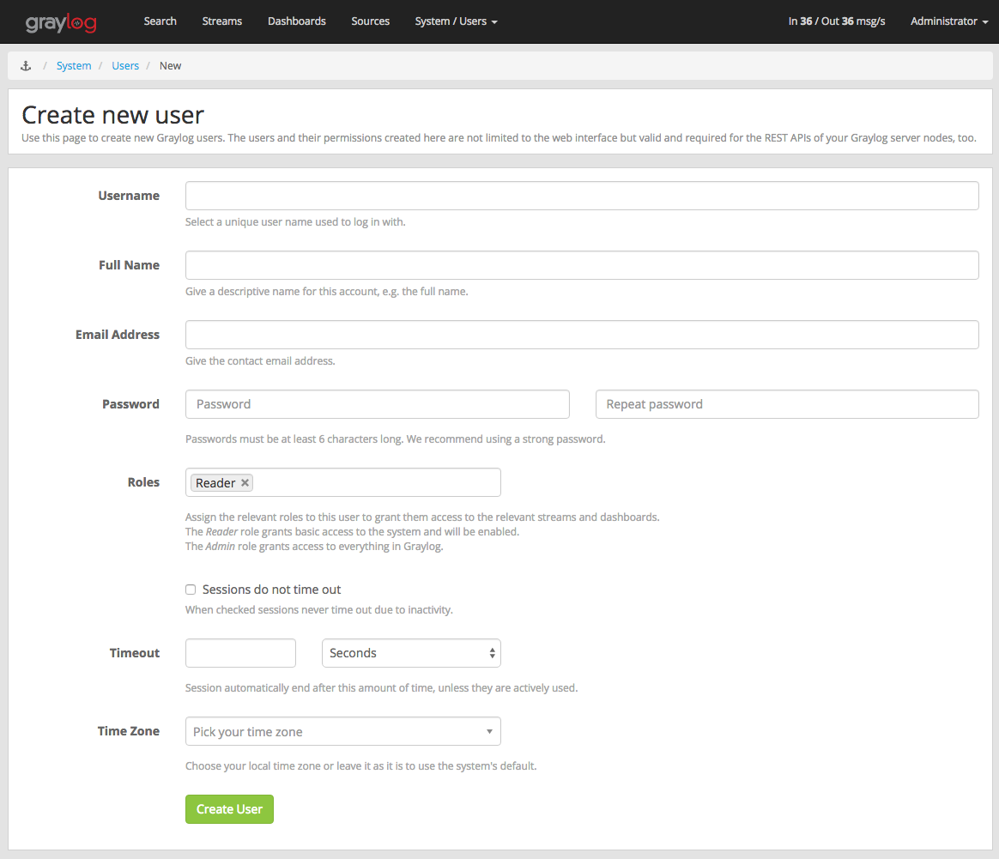

Users¶
It is recommended to create an account for each individual user accessing Graylog.
User accounts have the usual properties such as a login name, email address, full name, password etc. In addition to these fields, you can also configure the session timeout, roles and timezone.
Sessions¶
Each login for a user creates a session, which is bound to the browser the user is currently using. Whenever the user interacts with Graylog this session is extended.
For security reasons you will want to have Graylog expire sessions after a certain period of inactivity. Once the interval
specified by timeout expires the user will be logged out of the system. Requests like displaying throughput statistics
do not extend the session, which means that if the user keeps Graylog open in a browser tab, but does not interact with it,
their session will expire as if the browser was closed.
Logging out explicitly terminates the session.
Timezone¶
Since Graylog internally processes and stores messages in the UTC timezone, it is important to set the correct timezone for each user.
Even though the system defaults are often enough to display correct times, in case your team is spread across different timezones, each user can be assigned and change their respective timezone setting. You can find the current timezone settings for the various components on the System -> Overview page of your Graylog web interface.
Initial Roles¶
Each user needs to be assigned at least one role, which governs the basic set of permissions this user has in Graylog.
Normal users, which do not need to create inputs, outputs or perform administrative tasks like managing access control etc,
should be assigned the built in Reader role in addition to the custom roles which grant access to streams and dashboards.